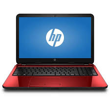

Esta tablet de Samsung tiene una pantalla de 7" en donde podrás ver fotos y videos, gracias a su cámara de 2 megapíxeles.
La Tablet cuenta con un gran diseño y versatilidad, además de facilitar su manejo y navegación, permitiéndote hacer todas tus tareas de forma más sencilla y rápida con su sistema operativo Android y su procesador Quad Core de 1.3 GHZ
iPhone
$12,999.00
Captura cada momento con su cámara trasera iSight de 8 megapíxeles y deléitate con imágenes nítidas que te harán recordar cada detalle y con su cámara frontal de 1.2 megapíxeles. Con Facetime podrás establecer videollamadas con las personas que más quieres.
Con su procesador A6 obtendrás un rendimiento de gráficos para que puedas disfrutar de frecuencias de imágenes más altas y gozar de una experiencia de juego más real y fluido. La memoria interna de 32 GB te permite almacenar videos, imágenes y tus aplicaciones favoritas como Facebook, Twitter, WhatsApp y muchas más. Por si fuera poco, la memoria RAM de 1 GB aumenta la capacidad multitarea, obteniendo un mayor desempeño al momento de trabajar con varias aplicaciones y con su batería de mayor duración y conectividad 3G podrás estar conectado por más tiempo y experimentar velocidades rápidas de carga y descarga.
Laptop

$4,599.00
Pase fácilmente de notebook a equipo con soporte, a carpa o tablet con esta increíble PC convertible de gran valor con bisagra de 360 grados. Con un desempeño de pantalla táctil optimizado y el sistema de sonido BeatsAudio, tendrá todo lo que necesita para la productividad y el entretenimiento al alcance de su mano.
Con Beats Audio y altavoces duales optimizados para su uso en cualquier posición, la HP Pavilion x360 está diseñada para obtener el mejor y más sorprendente sonido en una PC.
Chats web enriquecidos y fluido.
Capture todos los detalles con una claridad vibrante, incluso en situaciones de poca luz. Disfrute de los matices de las conversaciones cara a cara, gracias a la cámara web HD HP TrueVision.